Franz Josef
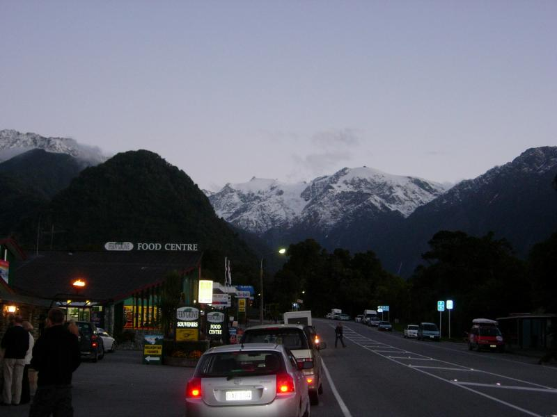
The town of Franz Josef is a small booking centre for glacier activities. They do have some great restaraunts, though. Had my first experience of whitebait, a West Coast NZ speciality. The smaller-than-sardines fish are stirred into a bit of egg and fried to make a mostly-twisty-little-fish foo young. Not bad, but Rex would be more enthusiastic than I was.
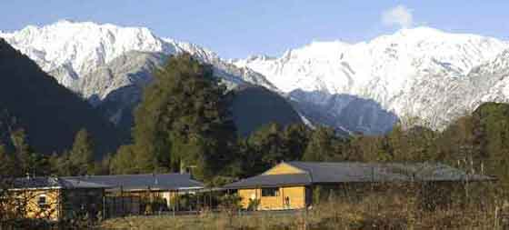
Stayed in the Westwood Lodge B&B just outside town.
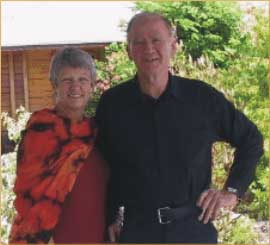
The hosts were nice, despite losing my reservation and not doing the wakeup call for the glacier helicopter despite three reminders the previous day. They do a gourmet dinner, which was very good (venison). Ate with an Venezuelan couple. He'd worked for Gartner in Venezuela! The West Coast highway is full of bridges, all most all of which are one-lane. He observed that wouldn't work in Venezuela because no one would ever yield. He'd just turned 60 and seemed a little vaguer than his wife. "I've traveled all over the world, and I remember the places with good food," he said. "The places without good food, I don't even remember."
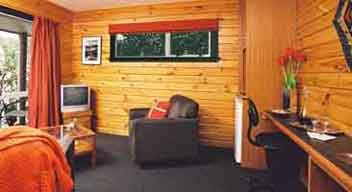
The rooms were top-notch.
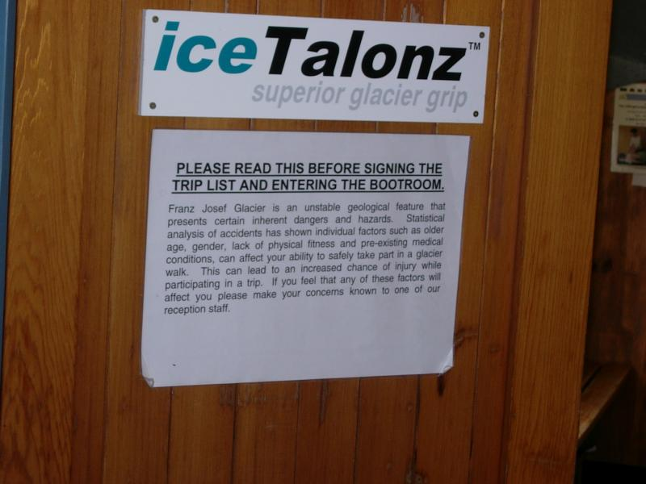
Do you have those days when you just know your gender is going to affect you?
(Hey, I'm concerned I'm going to trip on my putz.)
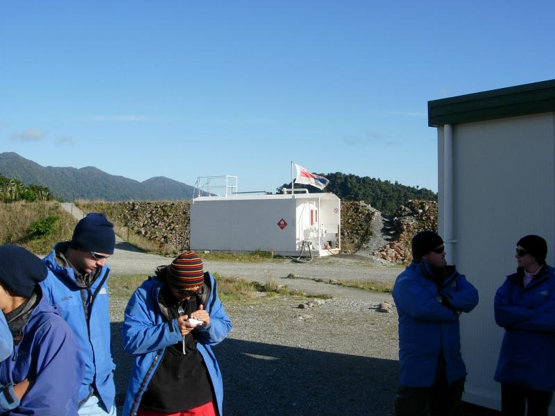
We put on boots and got talons (ice cleats) and waited for the helicopter to the glacier (it's a 4-hour hike to the tongue alone).
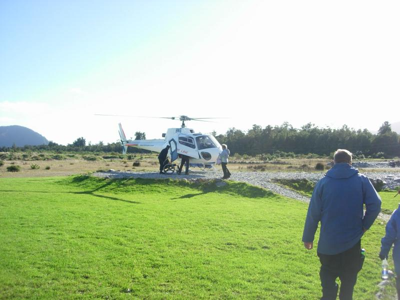
I hoped the guy getting off was in the same shape when the trip began.
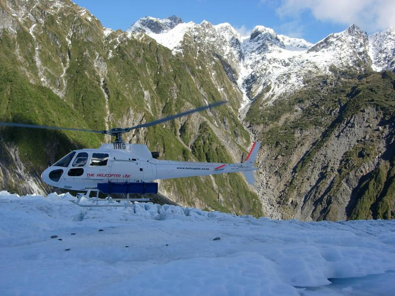
Arriving on the glacier. The ice is blue because it is compact (oxygen squeezed out), causing it to pass blue light for the same reason that the sky does.
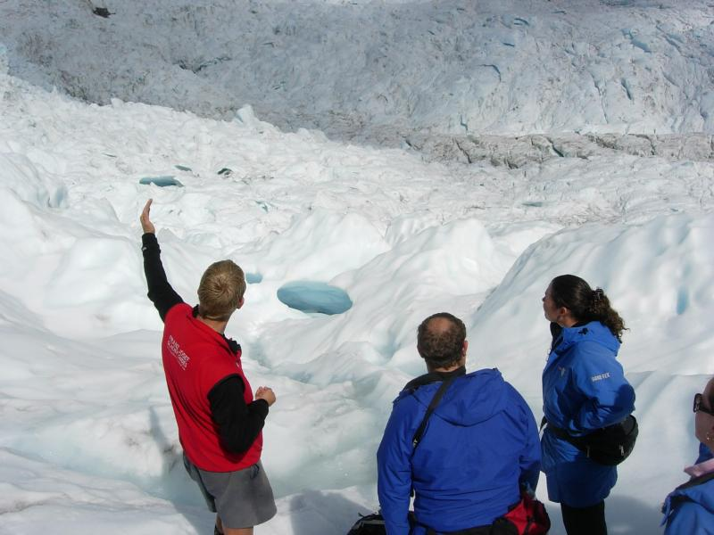
The Danish guide was named Roar, and asked us to do the jokes up front and move on. He must be a closet Aussie, he ragged everyone mercilessly (He was the only one to fall during the hike.) I asked him what was the dumbest question he'd had. He nominated two.
1 - (From an American blonde) "Is all that ice?"
2 - "What do you do in the summer when it all melts? (Asked in December, which is summer. And by definition, glaciers don't.)
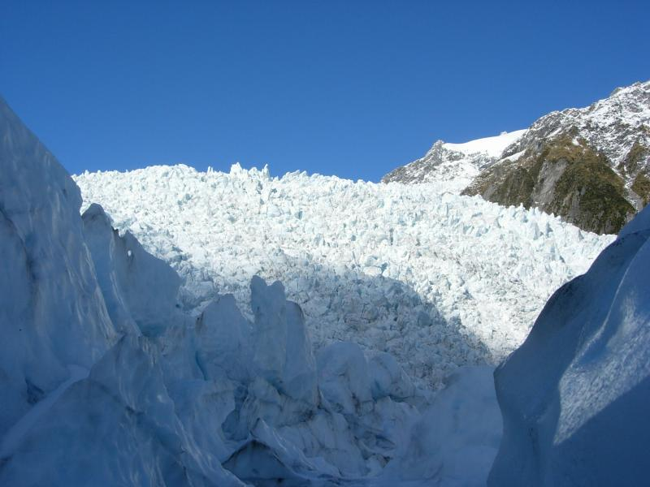
The accumulation zone. The ice here is 1000 ft. thick.
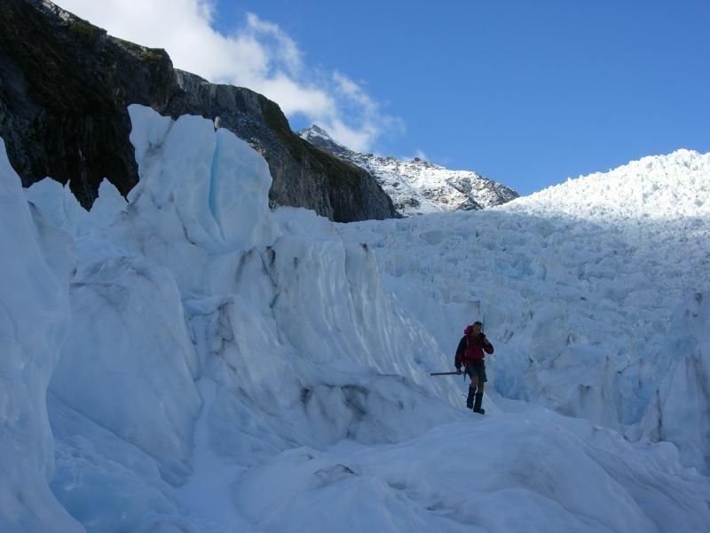
The ice moves downhill about 10" per day. There were several soft "POOM"s from moving ice while we hiked. Roar had to hunt around to find workable routes. After one long delay, I suggested we choose whom to eat first.
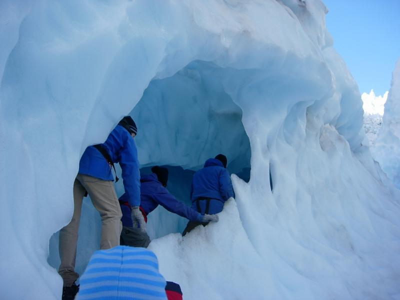
Ice tunnel
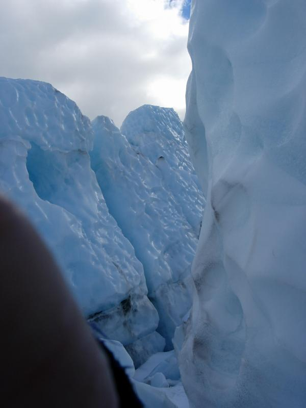
Crevice. The glacier was named after the emperor Franz Josef I by German explorer and geologist Ernst von Haast, who previously named the town of Haast, Haast Bay, Haast Pass, Haast Lakes 1 and 2, the Haast River, and 6 other Haast places.
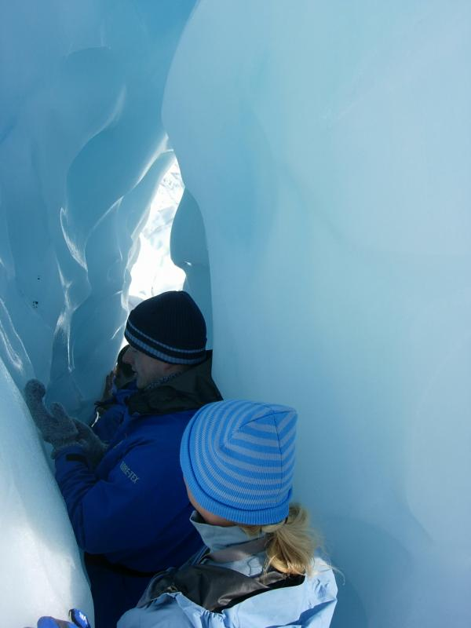
Inside a crevice
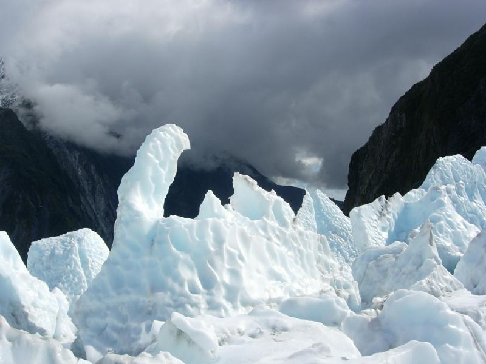
Self-generated sculpture
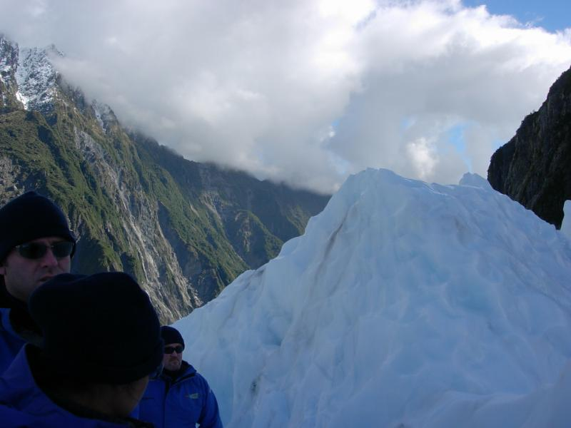
Two of the crew were World Travelers (you know, "I happened across this Nigerian in Tokyo whom I'd met my last Africa trip") and spent the hike making sure they'd been to all the same places, and comparing the authenticity of their experiences. She was English; he was Scottish and could watch Trainspotting without subtitles (I asked).
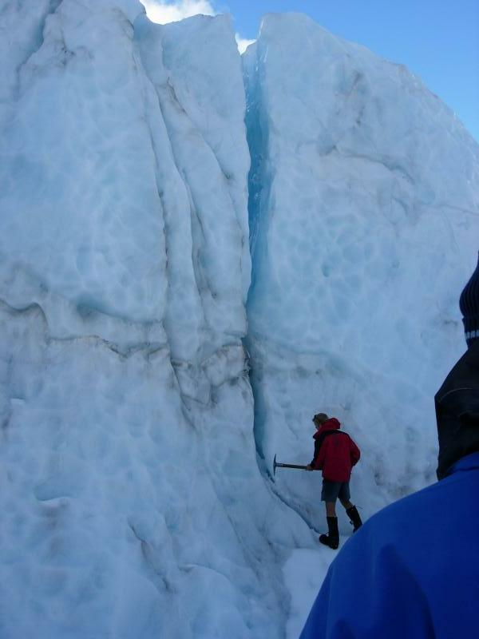
Roar was serious about taking us through this one, but gave up after a few minutes.
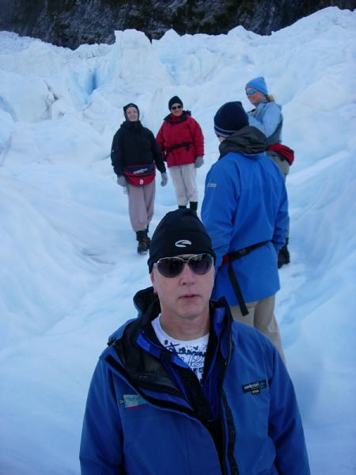
You really need shades on a glacier. I had no idea how much, but I was glad I got some!
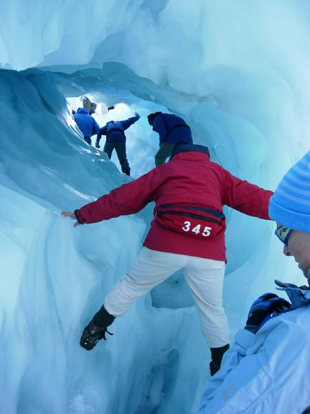
65-year-old Mum from England froze up here. Her daughter called encouragement from behind ("shall I pass forward your glasses?"). At the end of the hike, Roar asked her how she liked it. "I'll never do this again," she said fervently. "This is much harder than skydiving."
Here are some movies from the helicopter. I hope they convey how fun the whole thing was. I'd never expected this to be one of life's high spots, I'm not a glacier person, but as soon as it was over, I was ready to sneak on the next flight up.
Flying over the Glacier Tongue (.mov; 4MB)
Flying along the Mountains (.mov; 11MB)
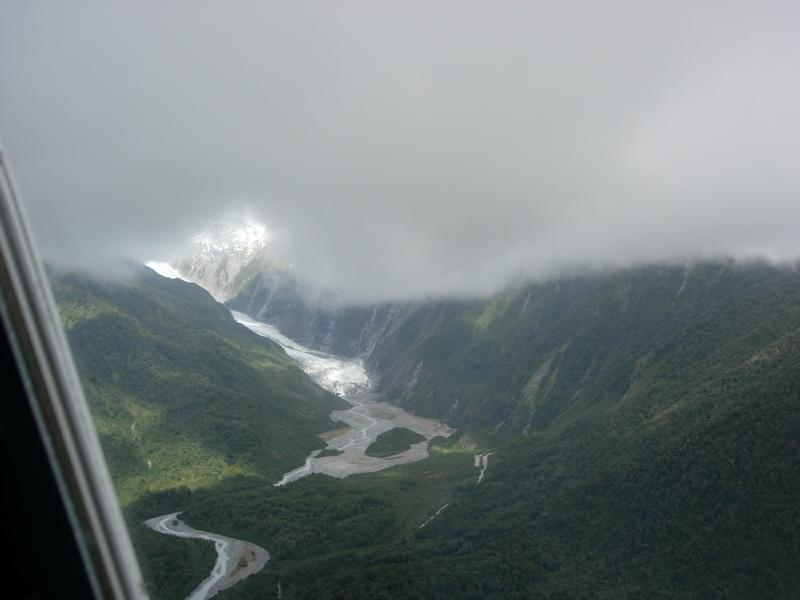
Glacier tongue and runoff, from the helicopter on the trip back. Weather moving in.